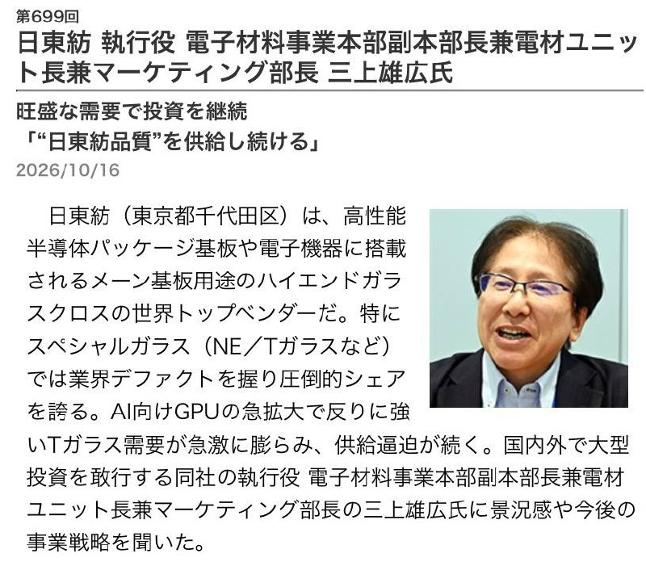

過去 26 小時頻道共 2 則貼文，都在 10/18 09:44 發出、都沒有文字。一則是腳本抓不到的媒體；另一則是日本產業媒體專訪日東紡（Nittobo）高層的截圖，主題是 AI GPU 帶動的 T 玻璃（T-glass）玻纖布缺貨與擴產。
編號 6494，2026-10-18 09:44 台北，是影片或受限內容（MessageMediaUnsupported），腳本抓不到，請自行開 App 查看。可能和 #6495 是同一組貼文。
（本則沒有文字，只有一張圖片）

圖片是日文產業媒體連載專訪「第699回」的截圖，日期 2026/10/16。受訪者是日東紡執行役、電子材料事業本部副本部長兼電材單位長兼行銷部長三上雄広，標題「旺盛な需要で投資を継続／『“日東紡品質”を供給し続ける』」（需求強勁所以持續投資，要持續供應「日東紡品質」）。導言說：日東紡是高階玻纖布的全球龍頭，用在高性能半導體封裝基板和電子產品主機板；特殊玻璃（NE、T 玻璃等）是業界事實標準，市佔壓倒性；AI GPU 快速擴張，抗翹曲的 T 玻璃需求暴增，供應持續吃緊，公司正在日本國內外進行大型投資。截圖只有導言，沒有訪談內文。
講解
玻纖布是做什麼的？IC 載板和 PCB 的核心是「銅箔基板」：把玻璃纖維織成布，浸樹脂後壓上銅箔。玻纖布負責撐住結構、決定尺寸穩定性，也影響電氣特性。一般 E 玻璃很便宜，但 AI 晶片的封裝很大（CoWoS 加上 HBM，載板面積越來越大），加熱、冷卻時材料熱脹冷縮不一致，載板就會翹曲，造成焊點斷裂、良率下降。T 玻璃的熱膨脹係數（CTE）很低、剛性高，可以壓住翹曲，所以是高階 ABF／BT 載板的關鍵材料。NE 玻璃則主打低介電常數／低損耗（low Dk/Df），用在高速網通和伺服器主機板，降低訊號衰減。這兩種都要特殊的玻璃配方和抽絲技術，良率門檻很高，所以日東紡幾乎是獨家供應。
為什麼缺貨？Nvidia、Google TPU、AWS 等 AI 加速器的出貨量和封裝尺寸同時放大，T 玻璃的需求倍數成長，但窯爐和抽絲產能需要好幾年才能擴出來。TrendForce 引述日經報導：Nvidia、微軟、Google、Amazon 已經包下日東紡今年大部分的高階玻纖布產能，還有報導說 Apple 派高層赴日爭取配額。這些客戶配額的說法來自媒體轉述，日東紡沒有證實。台灣載板廠欣興之前也說，玻布缺貨會影響供應。
擴產進度（查證結果）：
投資上的意義與限制：這篇專訪本質上是公司對外的經營說法（「持續投資」「維持品質」），導言裡的「壓倒性市佔」「供應逼迫」都是媒體和公司自己的描述，沒有提供新數字。要注意幾點：（1）公司已經表明不再漲價，意思是獲利主要靠量的成長，不是靠價格；（2）大規模擴產加上中國、台灣同業正在認證（例如台玻、富喬、中國的泰山玻纖、宏和等都在做低 CTE／低 Dk 玻布），2027–2028 年供需可能從缺貨變成平衡，報價和超額利潤會被壓縮；（3）需求高度集中在 AI 資本支出，如果雲端業者放慢 capex，影響會直接傳到上游材料。股癌只貼圖沒有評論，看不出他的立場，可能只是點出「AI 供應鏈上游材料瓶頸」這個題材。截圖原文的完整訪談我沒能找到並讀到，以上補充是根據其他報導。